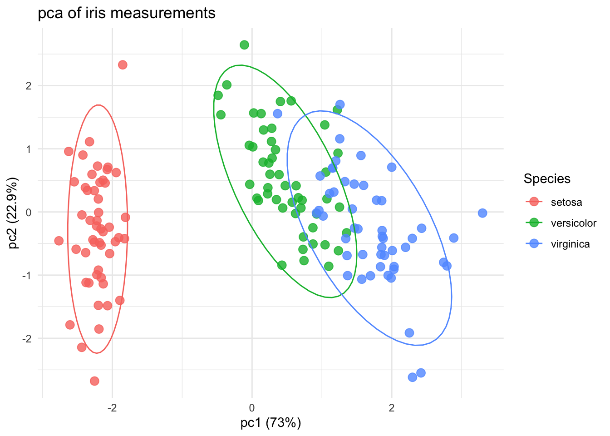
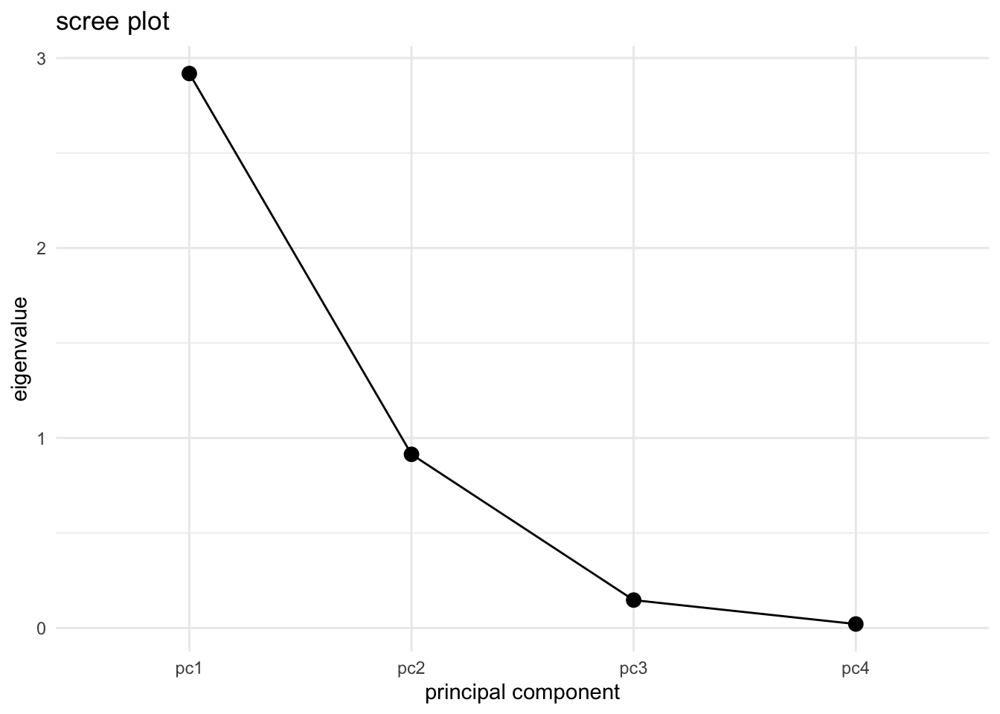
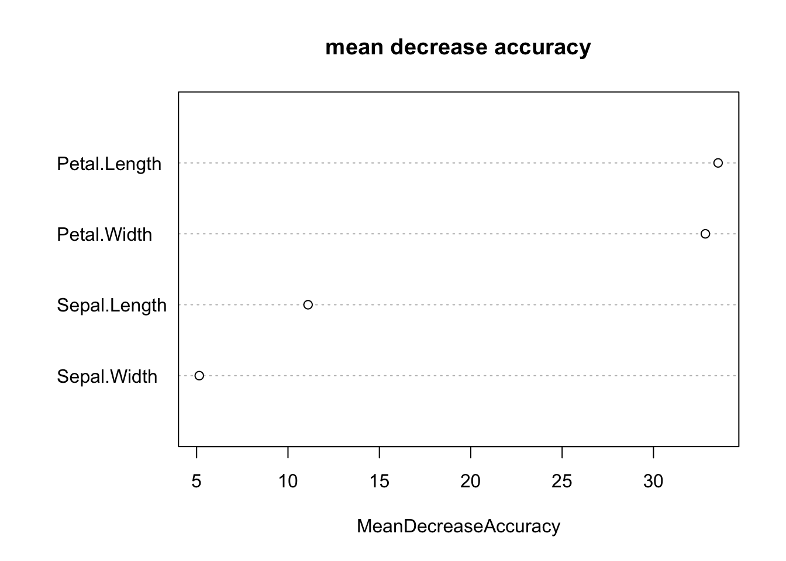
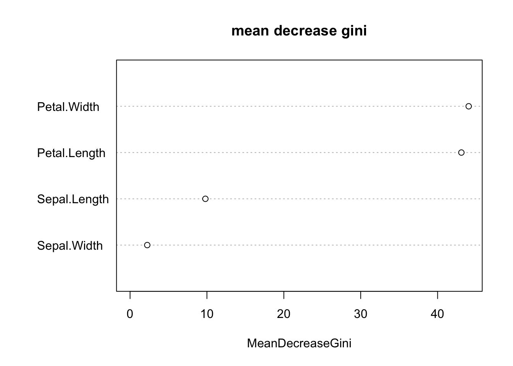

library(tidyverse)Warning: package 'ggplot2' was built under R version 4.4.3Warning: package 'lubridate' was built under R version 4.4.3── Attaching core tidyverse packages ──────────────────────── tidyverse 2.0.0 ──
✔ dplyr 1.1.4 ✔ readr 2.1.5
✔ forcats 1.0.0 ✔ stringr 1.5.1
✔ ggplot2 4.0.1 ✔ tibble 3.2.1
✔ lubridate 1.9.5 ✔ tidyr 1.3.1
✔ purrr 1.0.2
── Conflicts ────────────────────────────────────────── tidyverse_conflicts() ──
✖ dplyr::filter() masks stats::filter()
✖ dplyr::lag() masks stats::lag()
ℹ Use the conflicted package (<http://conflicted.r-lib.org/>) to force all conflicts to become errorslibrary(randomForest)randomForest 4.7-1.2
Type rfNews() to see new features/changes/bug fixes.
Attaching package: 'randomForest'
The following object is masked from 'package:dplyr':
combine
The following object is masked from 'package:ggplot2':
marginlibrary(vegan)Loading required package: permute
Loading required package: latticedata(iris)
iris$Species <- as.factor(iris$Species)
iris_numeric <- iris %>%
select(Sepal.Length, Sepal.Width, Petal.Length, Petal.Width)
pca <- prcomp(iris_numeric, scale. = TRUE)
summary(pca)Importance of components:
PC1 PC2 PC3 PC4
Standard deviation 1.7084 0.9560 0.38309 0.14393
Proportion of Variance 0.7296 0.2285 0.03669 0.00518
Cumulative Proportion 0.7296 0.9581 0.99482 1.00000variance_explained <- summary(pca)$importance[2, ] * 100
variance_explained PC1 PC2 PC3 PC4
72.962 22.851 3.669 0.518 pca_scores <- as.data.frame(pca$x)
pca_scores$Species <- iris$Species
ggplot(pca_scores, aes(x = PC1, y = PC2, color = Species)) +
geom_point(size = 3, alpha = 0.8) +
stat_ellipse(level = 0.95) +
theme_minimal() +
labs(
title = "pca of iris measurements",
x = paste0("pc1 (", round(variance_explained[1], 1), "%)"),
y = paste0("pc2 (", round(variance_explained[2], 1), "%)")
)
scree_data <- data.frame(
PC = paste0("pc", 1:length(pca$sdev)),
Eigenvalue = pca$sdev^2
)
ggplot(scree_data, aes(x = PC, y = Eigenvalue, group = 1)) +
geom_point(size = 3) +
geom_line() +
theme_minimal() +
labs(
title = "scree plot",
x = "principal component",
y = "eigenvalue"
)
bstick <- bstick(pca)
bstick PC1 PC2 PC3 PC4
2.0833333 1.0833333 0.5833333 0.2500000 broken_stick_results <- data.frame(
PC = paste0("PC", 1:length(pca$sdev)),
Eigenvalue = pca$sdev^2,
BrokenStick = bstick
)
broken_stick_results %>%
mutate(Keep_PC = Eigenvalue > BrokenStick) PC Eigenvalue BrokenStick Keep_PC
PC1 PC1 2.91849782 2.0833333 TRUE
PC2 PC2 0.91403047 1.0833333 FALSE
PC3 PC3 0.14675688 0.5833333 FALSE
PC4 PC4 0.02071484 0.2500000 FALSEadonis_result <- adonis2(iris_numeric ~ Species, data = iris, method = "euclidean")
adonis_resultPermutation test for adonis under reduced model
Permutation: free
Number of permutations: 999
adonis2(formula = iris_numeric ~ Species, data = iris, method = "euclidean")
Df SumOfSqs R2 F Pr(>F)
Model 2 592.07 0.86894 487.33 0.001 ***
Residual 147 89.30 0.13106
Total 149 681.37 1.00000
---
Signif. codes: 0 '***' 0.001 '**' 0.01 '*' 0.05 '.' 0.1 ' ' 1loadings <- as.data.frame(pca$rotation)
loadings PC1 PC2 PC3 PC4
Sepal.Length 0.5210659 -0.37741762 0.7195664 0.2612863
Sepal.Width -0.2693474 -0.92329566 -0.2443818 -0.1235096
Petal.Length 0.5804131 -0.02449161 -0.1421264 -0.8014492
Petal.Width 0.5648565 -0.06694199 -0.6342727 0.5235971loadings %>%
arrange(desc(abs(PC1))) %>%
select(PC1) PC1
Petal.Length 0.5804131
Petal.Width 0.5648565
Sepal.Length 0.5210659
Sepal.Width -0.2693474loadings %>%
arrange(desc(abs(PC2))) %>%
select(PC2) PC2
Sepal.Width -0.92329566
Sepal.Length -0.37741762
Petal.Width -0.06694199
Petal.Length -0.02449161set.seed(123)
rf_model <- randomForest(
Species ~ Sepal.Length + Sepal.Width + Petal.Length + Petal.Width,
data = iris,
importance = TRUE,
ntree = 500
)
rf_model
Call:
randomForest(formula = Species ~ Sepal.Length + Sepal.Width + Petal.Length + Petal.Width, data = iris, importance = TRUE, ntree = 500)
Type of random forest: classification
Number of trees: 500
No. of variables tried at each split: 2
OOB estimate of error rate: 4.67%
Confusion matrix:
setosa versicolor virginica class.error
setosa 50 0 0 0.00
versicolor 0 47 3 0.06
virginica 0 4 46 0.08rf_model$confusion setosa versicolor virginica class.error
setosa 50 0 0 0.00
versicolor 0 47 3 0.06
virginica 0 4 46 0.08conf_matrix <- rf_model$confusion[, 1:3]
accuracy <- sum(diag(conf_matrix)) / sum(conf_matrix)
importance(rf_model) setosa versicolor virginica MeanDecreaseAccuracy
Sepal.Length 6.495113 7.588736 7.690949 11.098105
Sepal.Width 4.364415 1.038790 4.546158 5.144762
Petal.Length 22.157039 34.060864 27.853055 33.535680
Petal.Width 22.482214 32.571528 30.595022 32.839577
MeanDecreaseGini
Sepal.Length 9.798189
Sepal.Width 2.236535
Petal.Length 43.093269
Petal.Width 44.042372varImpPlot(rf_model, type = 1, main = "mean decrease accuracy")
varImpPlot(rf_model, type = 2, main = "mean decrease gini")
importance_table <- as.data.frame(importance(rf_model))
importance_table setosa versicolor virginica MeanDecreaseAccuracy
Sepal.Length 6.495113 7.588736 7.690949 11.098105
Sepal.Width 4.364415 1.038790 4.546158 5.144762
Petal.Length 22.157039 34.060864 27.853055 33.535680
Petal.Width 22.482214 32.571528 30.595022 32.839577
MeanDecreaseGini
Sepal.Length 9.798189
Sepal.Width 2.236535
Petal.Length 43.093269
Petal.Width 44.042372importance_table %>%
arrange(desc(MeanDecreaseAccuracy)) setosa versicolor virginica MeanDecreaseAccuracy
Petal.Length 22.157039 34.060864 27.853055 33.535680
Petal.Width 22.482214 32.571528 30.595022 32.839577
Sepal.Length 6.495113 7.588736 7.690949 11.098105
Sepal.Width 4.364415 1.038790 4.546158 5.144762
MeanDecreaseGini
Petal.Length 43.093269
Petal.Width 44.042372
Sepal.Length 9.798189
Sepal.Width 2.236535importance_table %>%
arrange(desc(MeanDecreaseGini)) setosa versicolor virginica MeanDecreaseAccuracy
Petal.Width 22.482214 32.571528 30.595022 32.839577
Petal.Length 22.157039 34.060864 27.853055 33.535680
Sepal.Length 6.495113 7.588736 7.690949 11.098105
Sepal.Width 4.364415 1.038790 4.546158 5.144762
MeanDecreaseGini
Petal.Width 44.042372
Petal.Length 43.093269
Sepal.Length 9.798189
Sepal.Width 2.236535